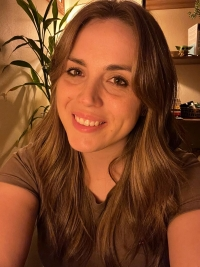

Maitê Maus | WDD 130

Sou esposa e mãe de dois meninos, e adoro aproveitar os momentos ao lado da minha família. Amo viajar, conhecer lugares novos e criar boas lembranças!
Nos meus momentos livres, gosto de cozinhar, cuidar das minhas plantas, fazer crochê e explorar novos hobbies. Sou uma pessoa curiosa, que gosta de aprender coisas diferentes e descobrir novas possibilidades.
Atualmente, estou estudando Desenvolvimento de Software na BYU-Pathway Worldwide e cursando WDD 130. Ainda estou no começo dessa jornada, mas estou gostando muito de aprender sobre desenvolvimento web e descobrir tudo o que posso criar com programação!
Sei que ainda tenho muito a aprender, mas estou animada com os desafios e as oportunidades que essa nova etapa pode trazer. Para mim, cada novo conhecimento é uma oportunidade de crescer, desenvolver habilidades e transformar ideias em projetos!